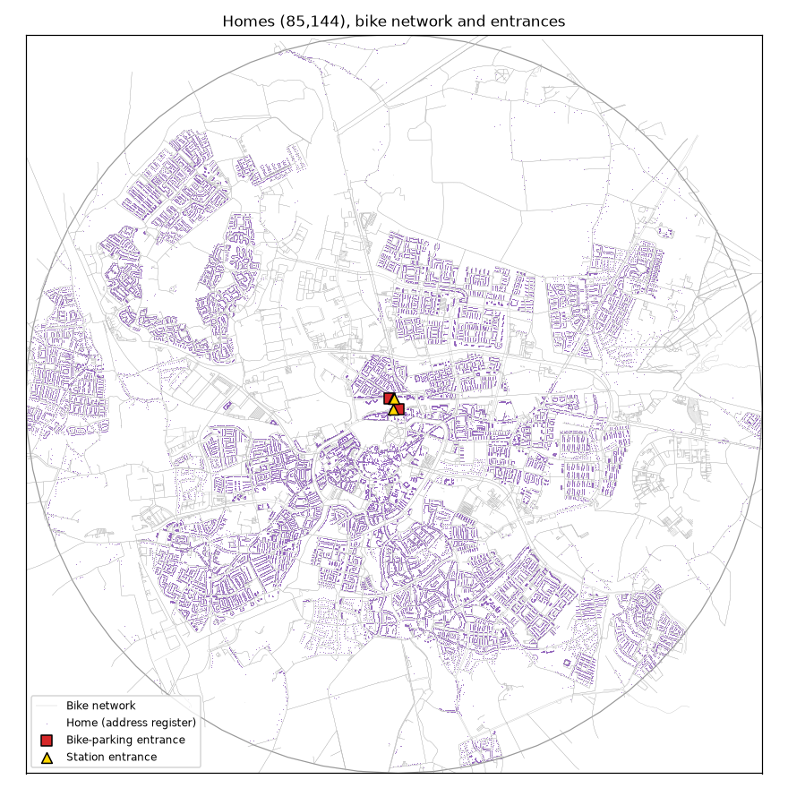
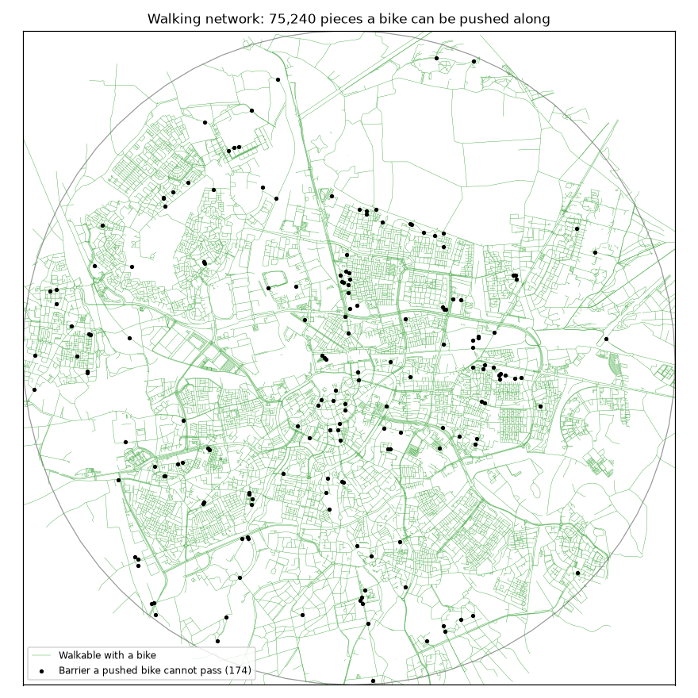
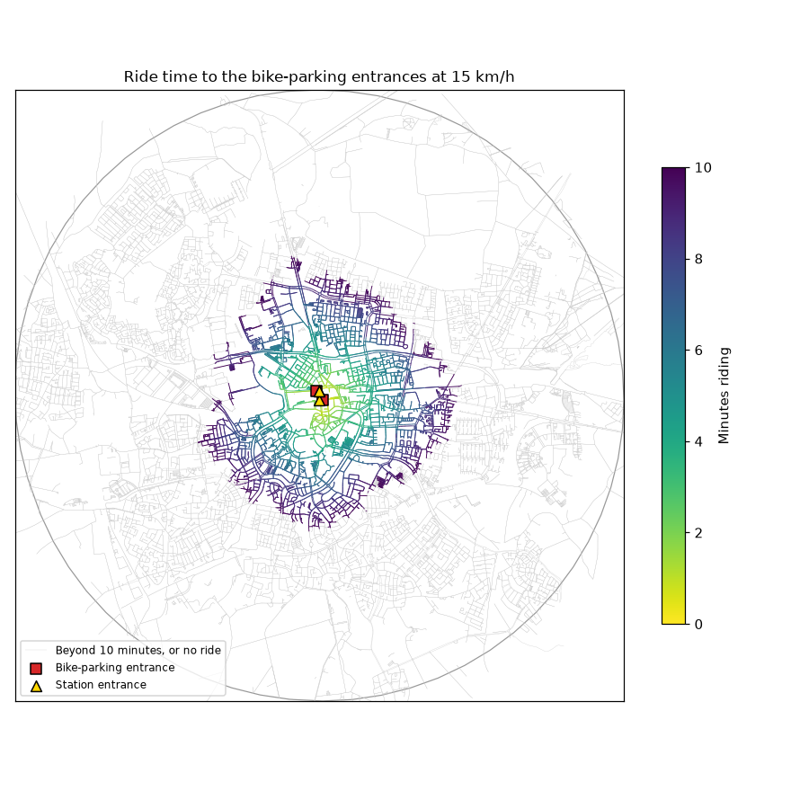
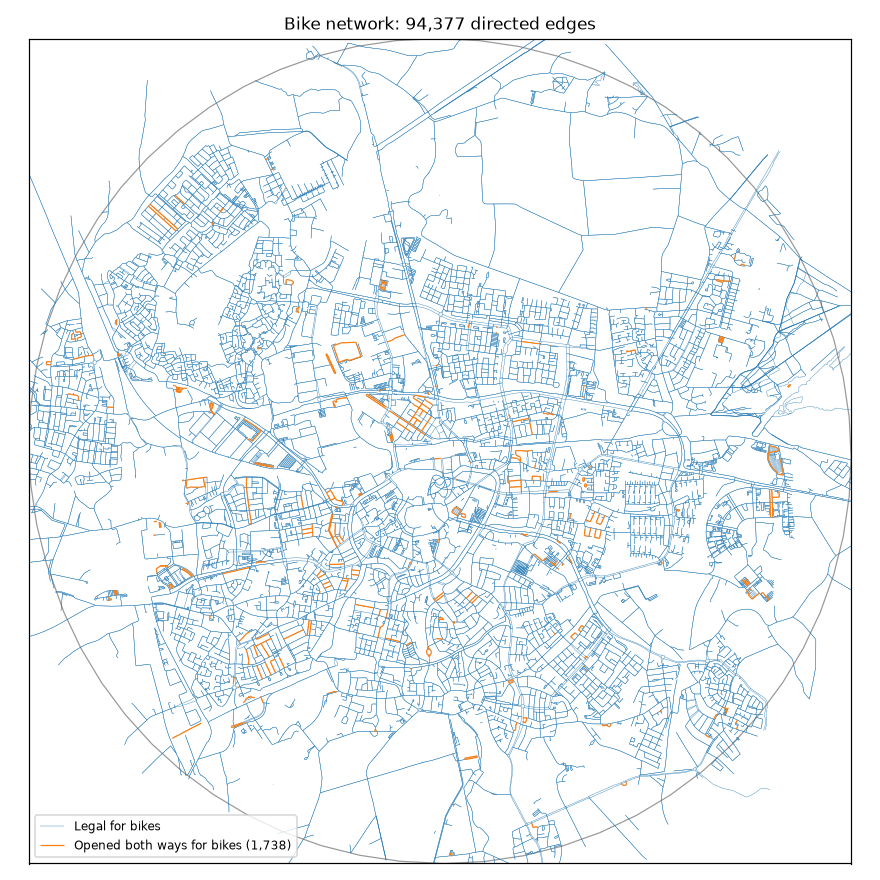
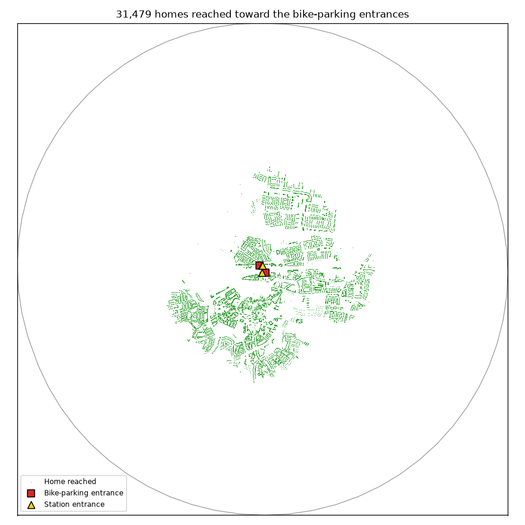

Method
This page describes how Breda station's cycling catchment was estimated. The Workflow page describes the role of AI and how to reproduce the analysis.
This pilot tested part of the method in my thesis proposal. The thesis will measure residential floor area per person across the Amsterdam transport region and compare it within the cycling catchments of metro and heavy-rail stations. The catchment is defined as the set of residential addresses that can reach the station by bicycle in a given amount of time. A method must therefore be devised to reliably delineate station catchments. However, accessibility to stations may differ based on the quality of the cycling network. I wanted to test a method of delineating catchments based on where cycling is not only possible but low-stress. I tested two methods:
- Legal-access method: the adopted method, which uses OpenStreetMap's mapped bicycle access and the direction rule.
- Low-stress method: the comparison method, which adds distance limits based on street characteristics.
After testing both, I found that the low-stress method was too complex and error-prone to justify using in a Dutch study area. The low-stress method required far more inputs and transformations, despite having only a ~5% difference from the legal-access method. Therefore, I have decided to adopt the legal-access method for my thesis.
An interactive system diagram shows the parts of the legal-access method.
Study population
The study area covered points within 5 km of the selected station and bicycle-parking entrances. Within this area, the population comprised 85,144 residential addresses in use, taken from the national register of addresses and buildings (BAG).

Trip definition
Each trip comprised an access walk, a bicycle ride and a walk to a bicycle-parking entrance. The access walk ended at the nearest network point from which a route could reach the station under the relevant method's rules, because a point without such a route could not provide a usable start. Cycling time was limited to 600 seconds, and an address was excluded if the ride from its nearest usable point exceeded this budget. The walk could not continue to a farther point with a quicker ride, which prevented walking from substituting for part of the ride toward the station.
Walking speed was fixed at 1.34 m/s, a measured speed for adults walking normally (Bosina and Weidmann 2017; Montufar et al. 2007). Each walk was limited to 2 minutes, which corresponds to approximately 161 m. Walking time fell outside the cycling budget. The final walk began where the cyclist dismounted and ended at the parking entrance. Access to the underground parking includes a staircase down which cyclists walk their bicycles.

Cycling speed was fixed at 15 km/h. Fiets Telweek was a national week of recorded cycling trips, and the chosen speed approximated its median of 15.083 km/h on 81 logged routes ending near the station. Measured Dutch riding speeds are higher, at 16 to 19 km/h, but they exclude some of the delays of a trip (Kager et al. 2016; Schepers et al. 2017; Yan et al. 2024). The pilot omitted waiting at junctions, so a lower speed was used.

Network data
The legal-access method used OpenStreetMap's map of Noord-Brabant as of 8 September 2026. The Netherlands' national road network also supplies road lines, but OpenStreetMap was selected for its more complete street and path coverage in this pilot.
Legal-access method
Cycleways and public roads were included unless the data marked them closed to bicycles. Paths and footways were included only where the data explicitly allowed cycling. Pedestrian streets were admitted based on a review of municipal records.
The added direction rule retained one-way travel for five categories: halves of divided roads, one-way cycleways and paths, roads with a painted lane or dedicated cycle path, roundabouts, and roads tagged one-way for bicycles. The rule identified painted lanes from OpenStreetMap tags.
Breda's traffic orders are the municipality's published decisions on street signs. They supported the direction rule. These orders permit cycling in both directions on 33 of the 36 one-way public streets checked.

The resulting network reached 31,479 addresses within a 10-minute ride of the bicycle-parking entrances.

Low-stress method
The low-stress method used the same OpenStreetMap network and trip budget as the legal-access method, but it evaluated whole routes. It matched each street to the national road network to read speed limits and road categories. One street score assessed separation from motor traffic, and another assessed the speed difference between traffic and cyclists. Both followed Weikl and Mayer's scales (Weikl and Mayer 2023). The minimum accepted score was medium, and streets meeting this minimum on every scored feature were classified as low-stress. Scores used OpenStreetMap tags. A painted lane passed the separation test, but its speed score could still exclude it. Missing speed or traffic-volume data did not by themselves cause exclusion. Assuming low traffic volume on streets with no traffic-volume estimate follows the published convention (Furth et al. 2016; Furth et al. 2018).
Other streets were assigned to the classes in Table 1.
| Street class | Permitted distance |
|---|---|
| Shared with traffic, up to 30 km/h, up to 5,000 vehicles a day | Unlimited; low-stress |
| Painted lane, up to 60 km/h, up to 5,000 vehicles a day in its direction | 200 m per stretch, 400 m per route |
| Shared with traffic, over 30 and up to 60 km/h, under 2,500 vehicles a day, outside the built-up area | 200 m per stretch, 400 m per route |
| Painted lane, up to 60 km/h, over 5,000 vehicles a day in its direction | 100 m consecutively, 200 m per stretch, 400 m per route |
| Shared with traffic, over 30 and up to 60 km/h, under 2,500 vehicles a day, inside the built-up area | 100 m consecutively, 200 m per stretch, 400 m per route |
| Anything else, assumed intolerable | Crossing only |
The street classes followed the Dutch design manual published by CROW (CROW-Fietsberaad 2016). Its tables set the 30 km/h speed limit and the traffic-volume thresholds for shared streets, and they treat streets inside and outside the built-up area differently. The low-stress method read built-up status from the national road categories. Streets with no national counterpart counted as inside the built-up area. The 60 km/h limit for painted lanes drew on Level of Traffic Stress, an American street classification (Furth et al. 2018), and on video-rated comfort research (Fitch et al. 2022).
Traffic-volume estimates came from Noord-Brabant's traffic model and Breda's map of roads carrying over 10,000 vehicles a day. Both directions counted on shared streets, because oncoming traffic forces a driver behind a cyclist to wait or pass closely. On painted lanes, only traffic in the lane's direction counted (Furth et al. 2018; CROW-Fietsberaad 2016; Mekuria et al. 2012).
Classes with distance limits were treated as uncomfortable. A stretch was defined as the uncomfortable distance accumulated before a route returns to a low-stress street. The stretch limit was 200 m, and the route limit capped total uncomfortable distance at 400 m. Within the uncomfortable classes, painted lanes carrying over 5,000 vehicles a day in their direction had a further limit of 100 m consecutively. For shared streets in these classes, the same limit applied inside the built-up area. This allowance on shared streets was for data errors. It was not an estimate of tolerable exposure. The distance limits express my judgment, since no measured limit on tolerable distance along uncomfortable streets was identified in the literature. However, recorded routes from the 2016 Fiets Telweek lend some credence to my chosen thresholds. Of 85 routes ending within 300 m of a Breda station entrance, the median longest uncomfortable stretch was 201 m and the median total 368 m.
In this project, a crossing was defined as a chain of sections, each at most 25 m long, that crosses a more important road at an angle of at least 60°. A crossing contributed no uncomfortable distance. Nor did it reset the accumulated uncomfortable distance.
Data review
The low-stress method used the lower of conflicting OpenStreetMap and national speed limits. Traffic orders resolved 38 of the 399 disputed sections checked, and on 31 of those 38 the order states the lower limit. Where OpenStreetMap lacked a limit, the national value was not substituted. Among 15 reviewed sections, that value was wrong on 7 and right on 3. Service roads, including parking aisles and driveways, did not receive the 50 km/h default for the built-up area. All six identified errors from this default concerned service roads with limits of 30 km/h or less.
I reviewed street classifications for the low-stress method using aerial and street-level imagery. I designed a form to streamline the process.
An example of a manual review form
The review covered 82 admitted streets whose exclusion would remove addresses, 43 excluded streets that blocked addresses, the 20 longest avoided streets, and 18 blocking streets with painted lanes. My answers determined the classes of 1,364 street segments. Sections affected by the crossing rule were reviewed without showing which rule version admitted them. I carried out the classification reviews alone, and no second reviewer has checked them.
Sensitivity checks
In the sensitivity checks, the low-stress method's route limit was reduced from 400 m to 200 m or removed. The allowance for data errors on shared streets was also removed. Separate checks varied travel direction and the use of parking or station entrances.
Limitations
The pilot modeled one station with data from one date. It fixed walking and cycling speeds and omitted waiting at junctions. Modeled traffic volumes were not checked against counts on municipal streets.
The low-stress method rests on design guidance, my judgment and my reviews. Its distance limits were compared with recorded routes but not validated against reported comfort. The method needed 11 inputs to the legal-access method's 3, and its catchment reached 95% of the legal-access catchment. In Breda, that difference did not justify the added complexity and risk of error.